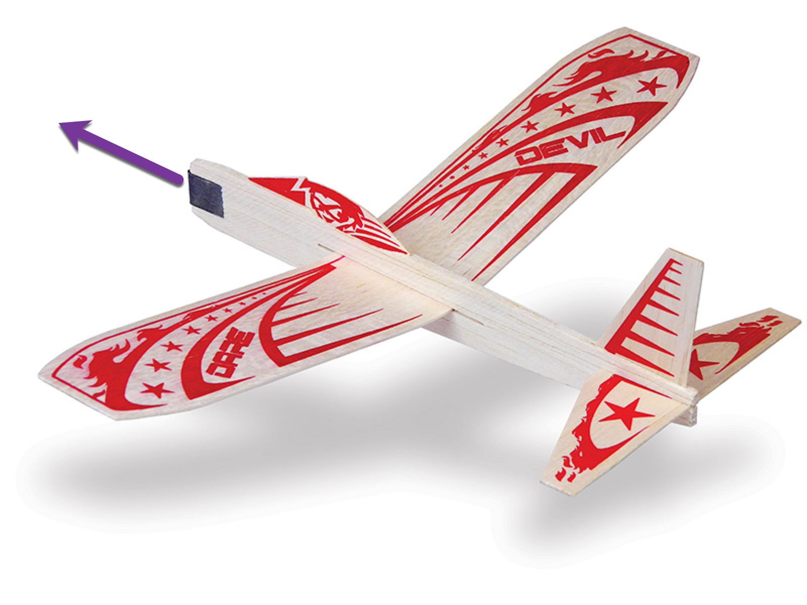
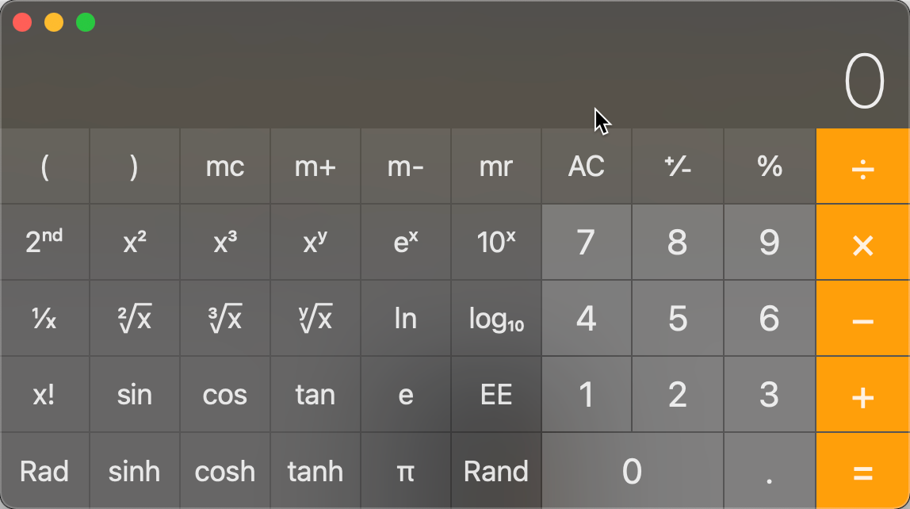
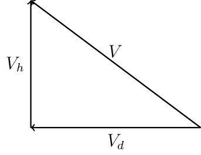

Indoor Aerodynamics¶
Aerodynamics is the study of the motion of the stuff we all live in, but never think much about: Air! I had never heard about aerodynamics until I watched a rubber-powered free flight model fly and decided I needed to figure out how that flight happened. I was nine years old at the time.
Back then, I had a vague idea that I needed to learn there something about air to figure out this flying stuff. For instance, when riding in a car, I noticed that when I stuck my hand out the window I could feel a force pushing on that hand. If I held my hand flat and parallel to the ground, the force seemed to go away. If I held it vertically, my hand wanted to fly to the back of the car! If I held it at an angle it wanted to fly upward! What was that all about anyway? I needed answers!
Living in the Washington, D.C. area, I had been taken to the Smithsonian Institution museums many times. Looking at all the exhibits there honed my curiosity. Eventually, I found myself wanting to understand what made all kinds of things work. From that point on, I never looked at anything without asking myself what was going inside that thing. With flying, there was a lot to figure out. Just sitting there staring at the Wright Flyer motivated me to dig deeper into this flying stuff, and that curiosity has followed me to this very day!
In this note, we will explore air and motion, hopefully in an interesting way. We will use math to help us understand how air works to let things fly! My goal here is to explain things to that kid I used to be. Ok, maybe not that exact kid, since that kid did not know much about math. However, the math we will use will be explained in a way that maybe a somewhat older kid will understand, especially one who has learned a bit of geometry and trigonometry. Do not get frightened away by the thought that we will be using math here. It should not be too painful!
I am also going to use some computer programming to help visualize the math. We will use Python, which is actually used to teach kids as young as I was back then how to use computers to do fun stuff. I am assuming that you have access to a computer and can install some simple tools to follow along with this discussion!
Motion¶
Let’s start off by taking a simple model airplane and tossing it into the air!
{kind=link}
I did exactly that a bunch of times as a kid, since these things were very cheap and easy to find in stores. Unfortunately, they did not fly all that well.
That arrow shows where the model is going, and the label V indicates how fast (velocity) we threw it! I wonder where it will go! Well there is a hint in that arrow!
Suppose we create a mathematical function that tells us how high the model will go over some amount of time. The kid asks: “What is a function?” Well, I suspect you have a calculator around somewhere. If not, fire up one on your computer:
{kind=link}
This is the scientific calculator on my Macbook.
See that button with the cos on it? You enter some number then push that button. Another number appears on the screen. Behind that button is a mathematical function that performs some magic and delivers the result to the screen. The function may do a lot of work, but we are not concerned with that, we just want the answer
Let’s invent a function of our own that will deliver the height the model will attain after some amount of time:
Here:
h is the height
t it some amount of time since launch
height is what we will put on our calculator button.
If we had this function in our calculator we could figure out how high our model would be by entering some amount of time then hitting the height key. The height would be displayed on our screen.
The magic is in the height function!
On the calculator, the magic behind each button is invisible. My curious self does not like that – I need to know what is going on. (Hint: it turns out it is just more math with some computer parts helping out!) Since we do not have a calculator with this height on some button, we need to figure out the math ourselves. The calculator can still help.
Newton’s First Law¶
Way back in 1687, Isaac Newton spent a lot of time thinking about how things move. Eventually, he published his thoughts in Principia, a book that is considered the foundation of modern physics. In this book Newton laid out some fundamental laws that explain how things move. His first law will help us figure out where our model will go:
An object at rest remains at rest, and an object in motion remains in motion at the same speed and in the same direction, unless acted upon by an unbalanced force.
At the moment we do not seem to have any forces (unbalanced or otherwise) acting on our model. We tossed it and it flew away on its own. According to Newton, it will fly away along a path indicated by that arrow in the figure.
That law tells us the model fill fly “in the same direction, and at the same speed” forever. That is not good. I spent my hard earned money (I delivered papers back them) buying this silly model and one launch is going to send it to outer space?
Well, we just know that will not happen. Surely it will fall back to the ground some distance away. But why?
There actually is a force acting on that model after our toss. The force is another of those important, but often ignored, things we live with all the time: gravity!
Before we dive into gravity, let’s stop for a moment, and think about that arrow in the figure above. Formally, that thing is called a vector, and vectors are going to be very useful gadgets in our work!
Vectors¶
That arrow shows where we expect our model to go. If you think about it, the model’s motion actually has two parts: the model will fly upward and it will fly directly away from us. As time move along, the model will get higher and higher, and get further and further away. It looks like we need a second function to explain all of the motion:
Here d is the distance away from the launch point and t is the time since launch. I named this function distance to distinguish it from height defined earlier.
A vector is something that has both a magnitude and a direction. Our velocity vector arrow shows the direction, and we can show the magnitude (speed in this case) by drawing the arrow some length that represents that speed. With this in mind, the two parts of our model’s motion look like this:

Here we introduce two more vectors; one showing the motion upward giving us height, and another showing motion away from us showing the distance along the ground the model has traveled. It is important to see that these two motions are happening at the same time!.
These three vectors form a right triangle, and if we know the angle of our toss, we can calculate the lengths of the two new vectors:
Here, V is the magnitude of the toss (its speed) and \(\alpha\) is the angle we used in our toss. \($V_d\) is the magnitude (speed) along the ground, and \(V_h\) is the speed upward as the model gains height.
Unit Vectors¶
It will be convenient to talk about vectors in terms of directional components like distance and height. Normally, we use a simple X-Y coordinate system in our discussions. If we set things up right, X is a measure of distance, and Y is a measure of height.
Suppose we have a vector whose magnitude is one, and whose direction is parallel to the X axis. We will call this vector \(|hat{i}\). The hat symbol is to remind us that this is a special vector with a magnitude of one, and the i tells us it is aligned parallel to the X axis. The direction of this unit vector is in the direction of increasing X. A similar unit vector aligned parallel to the Y axis will be called \(\hat{Y}\).
Now our distance vnd height ectors become:
With these definitions, we can show how to add two vectors:
The magnitude of $|overrightarrow{V}$ is given by this equation:
Finally, let’s get rid of the height and distance names. We will use a subscript of x to indicate a direction parallel to the X axis, and y to indicate a direction parallel to the Y axis. In both cases, the direction is along increasing values of X and Y.
Now, let’s look at gravity!
Gravity¶
Kids are often told that Newton figured out gravity after an apple fell on his head while he was sitting under a tree. In fact (or so history goes), he just watched one fall from a tree and his thoughts about that led to his second law:
The time rate of change of the momentum of an object is equal in magnitude and direction to the force acting on that object.
In this case, the force was called gravity. Momentum is actually pretty simple:
The momentum of an object is its velocity (a vector) multiplied by its mass (think weight for now).
We call that “time rate of change” of velocity acceleration! You know what that is. If the driver of a car stomps on the gas pedal, the car *accelerates! It goes faster and faster until the cops pull the car over!
In math terms, this law looks like this:
Actually, a force has magnitude and direction, so we need to show that. To make this easier to follow, we will add notation that tells us when something is a vector: we will place a small arrow above the term:
So, V means the magnitude (speed) of our vector and \(\overrightarrow{V}\) means the actual vector, itself. In our equation, mass (m) is not a vector, it is just a number we call a scalar since multiplying a vector by a scaler just gives is a new vector with the magnitude scaled by the amount indicated by that number!
Think about our model launch! We accelerated the model from nothing to some speed with the force of our arm, then released the model in some direction, removing that force as we let it go! That acceleration went to zero and it looked like Newton’s first law took over! However, that gravity stuff was still at work, pulling the model downward, So our height function is more complicated than we thought. Gravity does not affect the distance vector at all!.
Finally, we need to distinguish between mass and weight. When you stand on a scale, your mass is pushed down by the force of the Earth’s gravity on that scale. The scale measures that force and we call the reading our weight. If we were standing on the Moon when we did that, our weight would be much lower, since the force of gravity on the Moon is about one sixth of that on earth! (New diet plan: move to the Moon!)
Time¶
We have mentioned time several times in our discussion. We need to think about time a bit.
Time is measured in something we call seconds or a few related names. Time is not a vector, but it does have a *magnitude. We think of time as marching from the past to the future, or from now to the future. Lets indicate the start time of our flight as time zero and use this symbol:
Obviously, we never worry about when time started in a real sense, although Physicists are always thinking about that. We are more interested in some interval of time, so we will arbitrarily say that the value of time at $T_0$ is just zero. From that moment on, we will measure our flight time in seconds.
Can we use time to figure our where our model will be some time later? Of course. The speeds involved will show us the way:
I decided to show the velocity at the instant of launch as \(V_0\). After some time t has passed the height and distance can be calculated with our trusty calculator!
Next Steps¶
Have you had enough math for the moment? Let’s switch gears and show some python code and graphics to demonstrate our model’s motion.
To follow along next, you need to do some setup work, explained in the Appendix (jupyter-setup)